Who’s here
The artists
Follow the thread: open each artist’s page to discover their work.
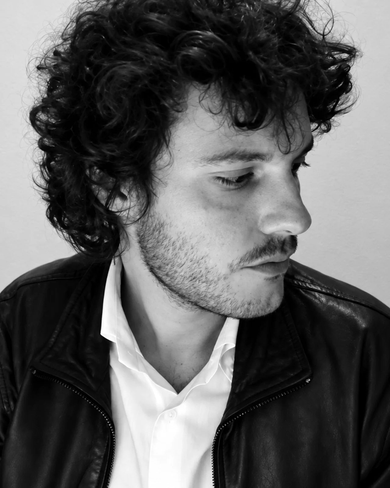
Mattia Signorini
Writing
Novelist, translated across half the world.

Giorgia Roversi
Painting
Painting the invisible anatomy of emotions.

Zentequerente
Visual arts
Drawing and gathered marks: the invisible within the visible.

Marcello Ubertone
Singer-songwriter
Songs that tell stories, between imagination and real life.

Anna Spazio Marangon
Visual arts · installation
Installations of threads and knots, between space and matter.
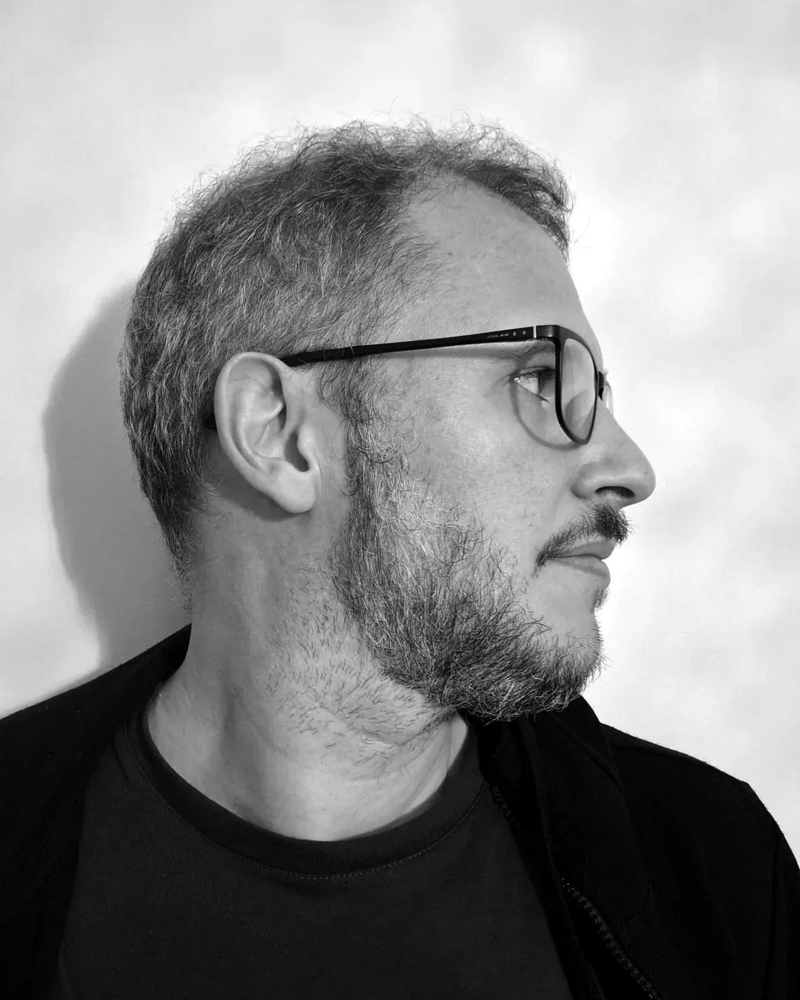
Enrico Buoso
Music and composition
Weaves of notes and networks of people.

Martino Prendini
Visual arts
Explores through the senses what cannot be discovered any other way.
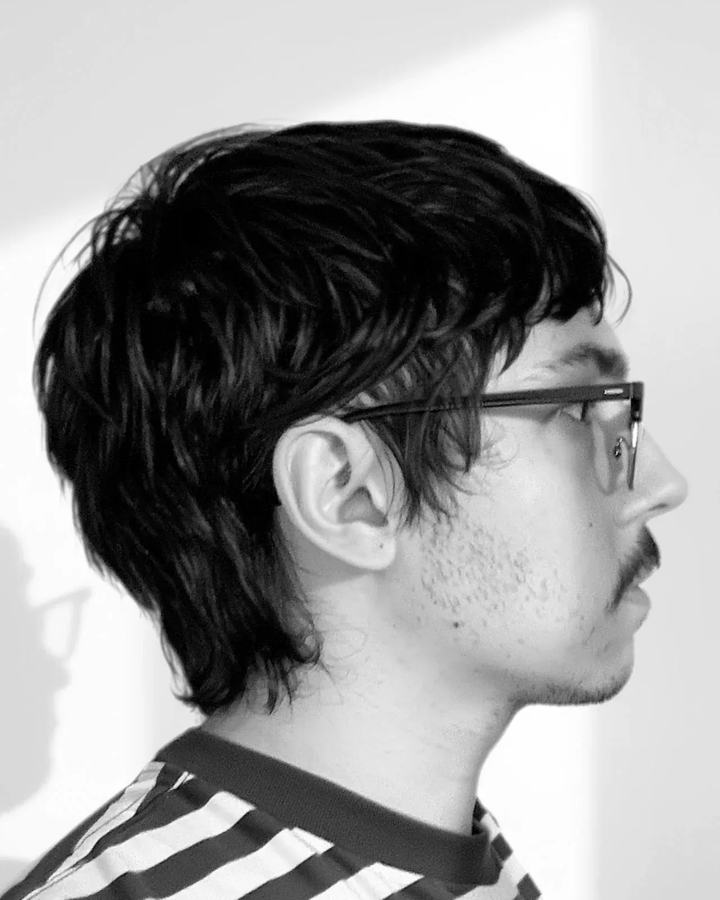
Daniele Corrain
Painting and illustration
Paints whatever comes into his head, getting his hands dirty.
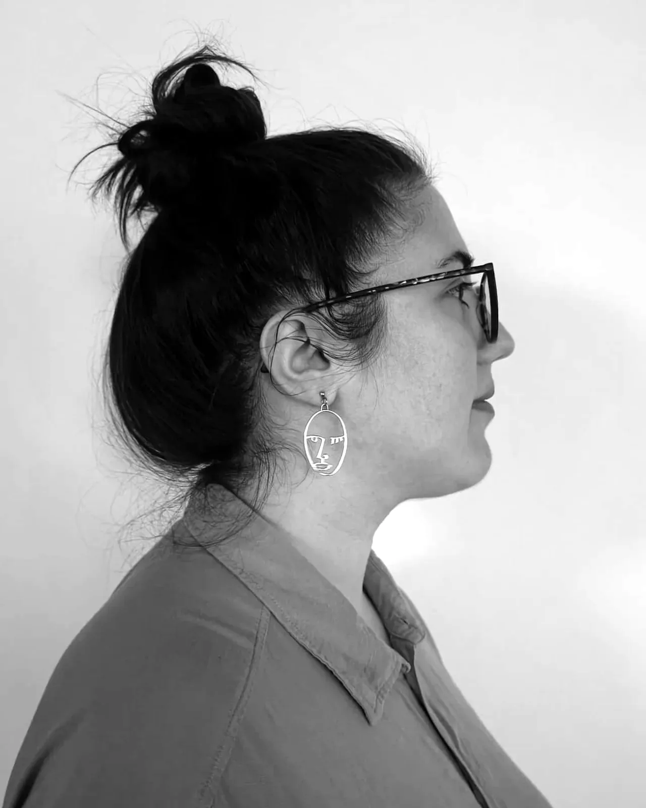
Giulia Dal Prà
Collage
Cuts out, pairs and recomposes what others have stopped looking at.
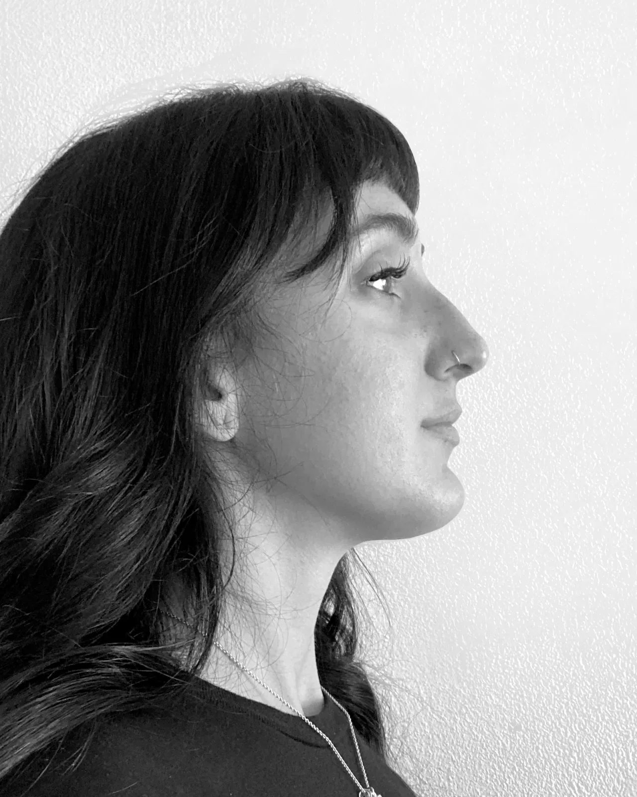
Anna Randolo
Illustration · Unnyverso
Gives colour and voice to stories, especially for children.
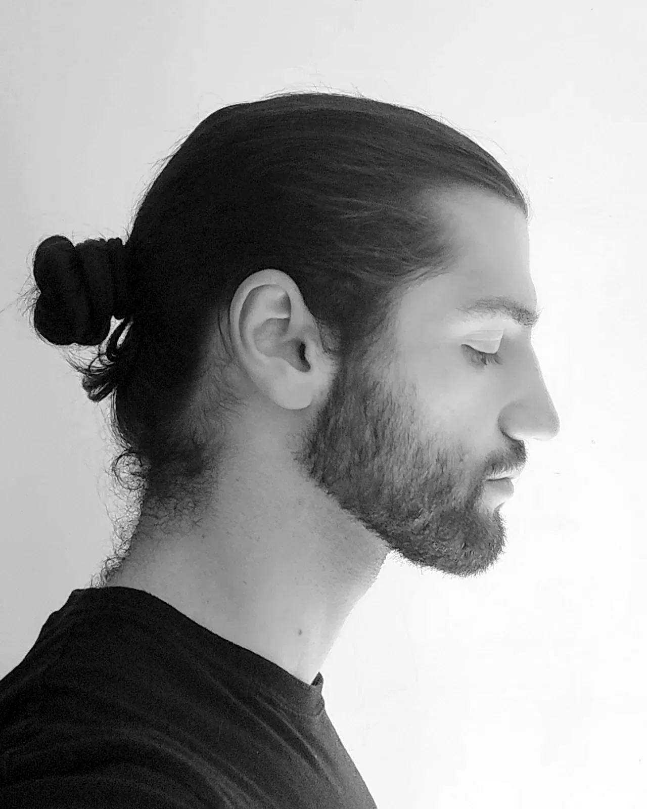
Salvatore Passalacqua
Music and visual arts · ETHA
Acoustic instruments and electronics, between the real and the surreal.
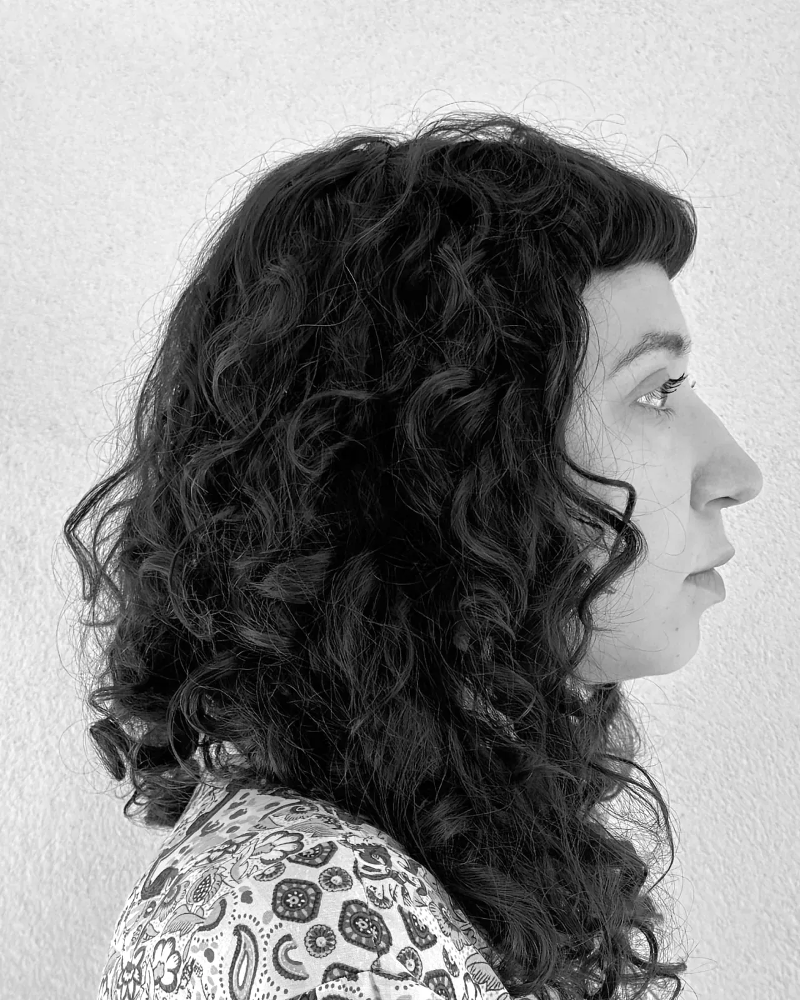
salsa_wasabbee
Comics and illustration
Black-and-white comic pages: experimenting, getting scared, falling asleep.

Francesca De Simone
Poetry
Captures an unfamiliar feeling in a few lines of verse.
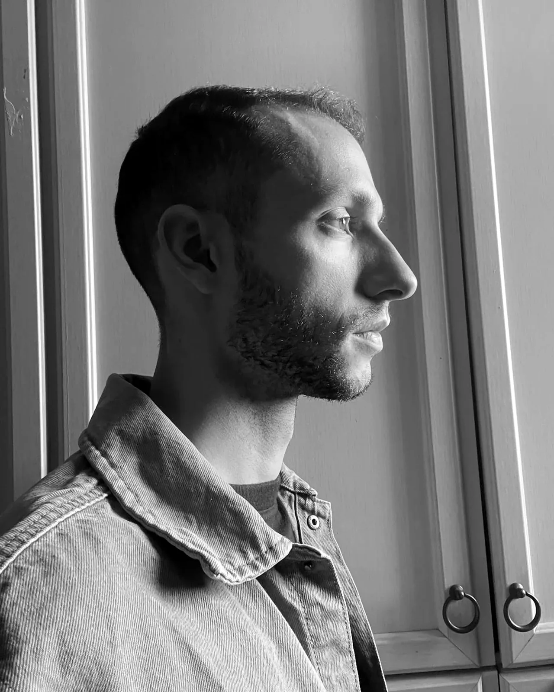
Elia Pellegrini
Visual arts and 3D
Light, architecture and time, between Gothic rose windows and the world of dreams.

Alessandro Alfonsi
Music and theatre
Music and words, memory and listening.

Irma Paulon
Visual arts and sculpture
Resin, wood, glass and metal: the aesthetic dignity of matter.
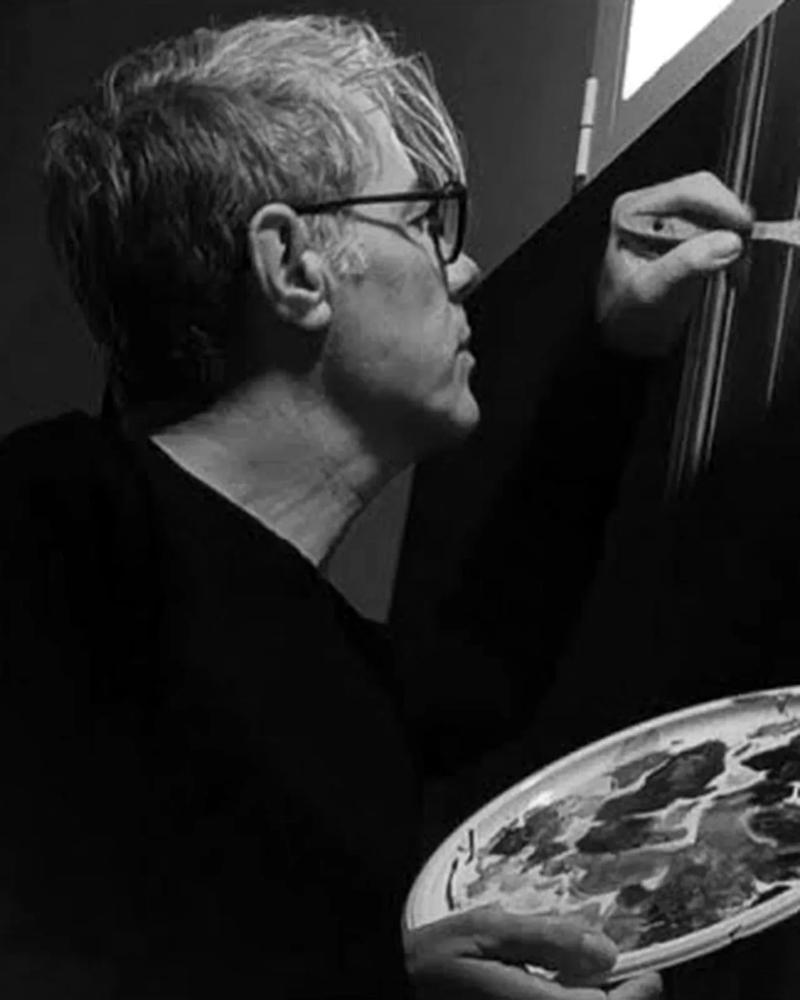
Andrea Fabbri
Painting and tattooing
Tattooing and painting: turning shadow into emotion.
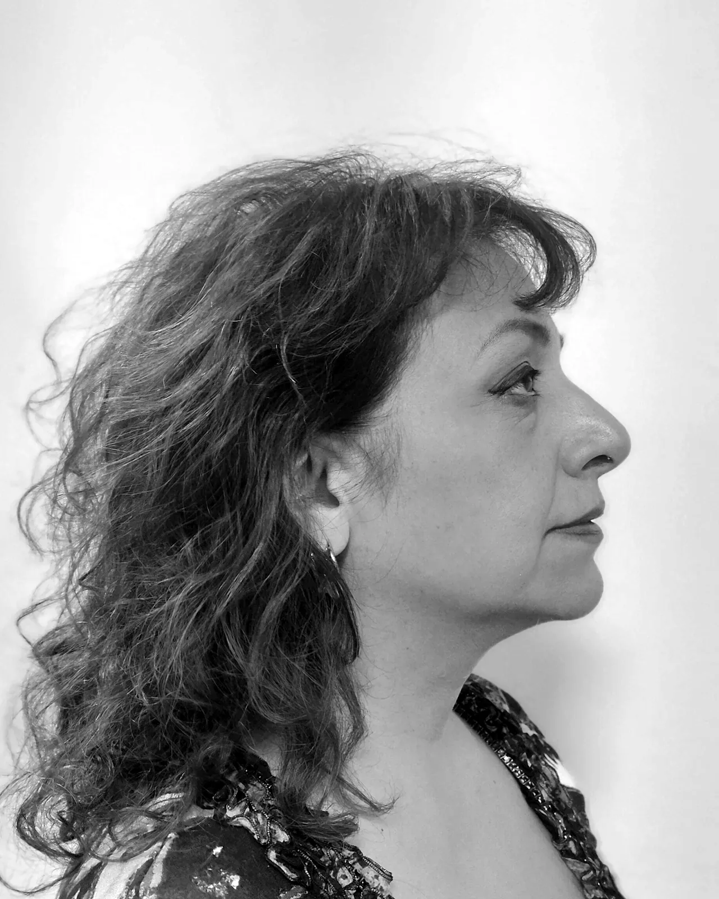
Maryam Amirfarshi
Painting and mixed media
Signs, codes and threads binding languages, memories and geographies.

Martina Barison
Headwear collection
What does a hat have to say? Journeys and peoples, from every corner of the world.
Who’s visiting
The guests
Four invited guests alongside the local artists.

CAINO
Photography
Photographs that tear apart and recompose the icons of painting.

FILO
Singer-songwriter
Singer-songwriter, author of the album «In cerca di un filo».

Massimo Marchioro
Painting
Searches the deepest rooms and the stairs that lead upwards.
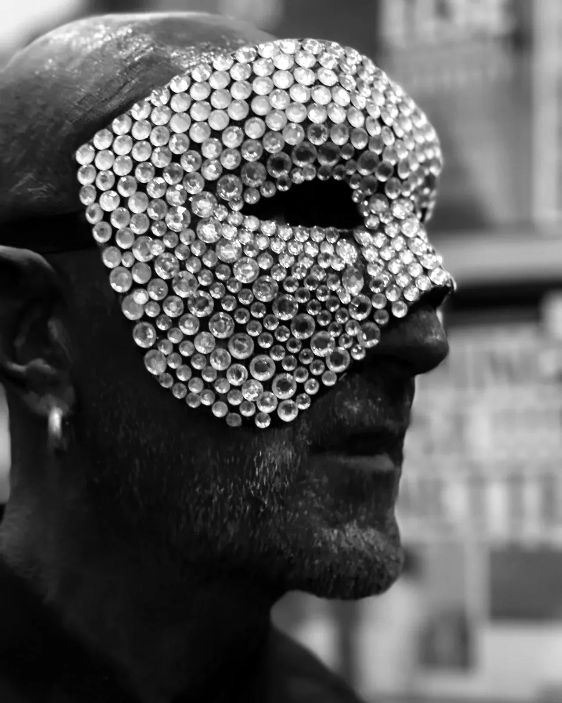
NIHIL
Music and songwriting
Heir to the throne of a landless kingdom, travelling with music.
Who organises it
The organisers
The festival is conceived and curated by the IANUA collective.
The weaversthose who design the weave

Nicola Elias Rigato
Music, composition
Looks for what lies behind beauty. In IANUA he is in charge of artistic direction.

Chiara Tosti
Dance and theatre
Dances because that is how she thinks. In IANUA she is in charge of production.

Greta Rigato
Visual arts and installation
Creates connections between languages and people. In IANUA she is in charge of communication.
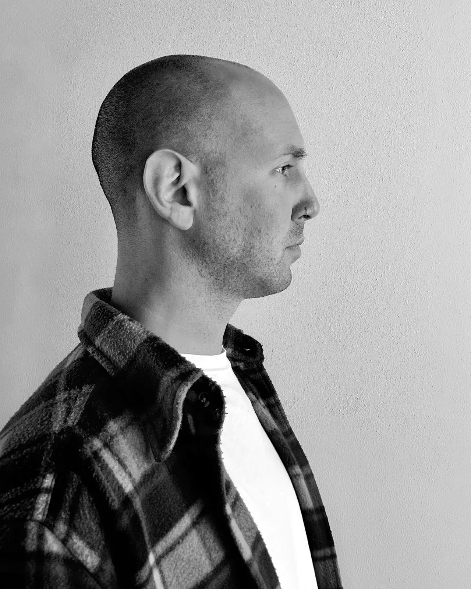
Marco Franceschetti
Photography and songwriting
Colours in complex patterns, flies over them with music, finds his way out through photography. In IANUA he is in charge of operations.